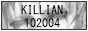
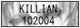
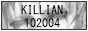

| Voluntary Human Extinction Movement: "Phasing out the human species by voluntarily ceasing to breed will allow Earth’s biosphere to return to good health." |
| イルカの夢でさようなら: Click the girl to kill her. Eyestrain warning. |
| Konaka.com: Chiaki J. Konaka's homepage. Script writer of many popular shows like Serial Experiments Lain. While I don't agree with his public activity these days, this site is mildly influential to me. |
| Nevada Outback Gems: While it looks a bit oldschool, the guy who runs this site is an active prospector/video logger on Youtube. |
| Serious Los Angeles City of Rockers: Digital landmark for an American punk/rocker's clothing brand, now defunct. |
| Collapse OS: Bootstrap for a supply-conscious era. In theory, post-collapse communities may run this on salvaged (usually low spec) tech and it assembles itself on application. |
| Decker: In-browser "everything-engine," successor of Hypercard. |
| Moebius ANSI Art Editor |
| catbox.moe: Permanent online storage. |
| MediaFire: Private and public file-sharing. |
| Doko Demo Issyo PSP English Patch |
| Arch Linux Guide: ARM port installation. |
| Arch Linux bsdtar fix: Script to fix the bsdtar error during partition setup. |
| Offline Installation for Arch |
| Adafruit: Electronics distributor. They sell Raspberry Pi & Arduino accessories, and cosplayer-favored hardware here. |
| Canakit: The other official Raspberry Pi distributor. |
| CosplayShop: Cosplay materials, focus point on foam, molds, and contact cement. |
| The Cosplay Pros: This is primarily where I buy my foam and foam clay from. |
| Cutie NEVADA: A parody of the Cutie Honey intro song in tribute to Nevada Tan. |
| Five-Hundred Million Years for One Million Yen Button: Would you press the button? |
